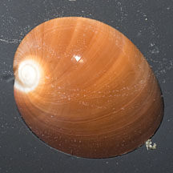
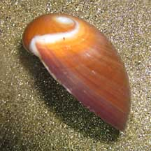
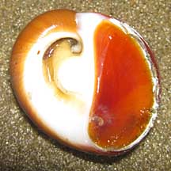
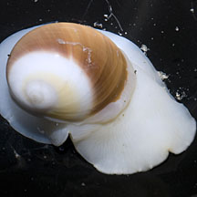
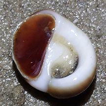

|
|
| shelled snails text index | photo index |
| Phylum Mollusca > Class Gastropoda > Family Naticidae |
| Eggwhite
moon snail Polinices albumen Family Naticidae updated Aug 2020 Where seen? This flat moon snail with a U-shaped depression on the underside is often seen on Cyrene Reef on the sand bar. It has also been seen in a few of our other sandy shores. Elsewhere, it is found in clean sandy bottoms from shallow subtidal area to a depth of about 70 m. It is also known as Neverita albumen. Features: 4-6cm. Shell smooth glossy, thick heavy, semi-spherical (wider than long), very flat with an almost flat spire. Shell pattern white at the spire, uniform colour elsewhere: white, cream, pale yellow to brown and orangey brown. On the underside, a deep U-shaped depression. Operculum smooth, made of a thin horn-like material, reddish or yellowish brown. Body huge, opaque white and when expanded it does resemble the albumen of a hard boiled egg. Tentacles short, white. |
 Cyrene Reef, Jun 12 |
 |
 |
| Human uses: Where common, it is harvested for food and for the shell. In Thailand, commonly collected by fishing nets from depths of 2 to 10 m. Known also to be sold as food in the markets of Kyushu (Japan). |
|
 Changi, Jan 10 |
 |
 Cyrene Reef, Jul 12 |
| Eggwhite moon snails on Singapore shores |
On wildsingapore
flickr
|
| Other sightings on Singapore shores |
 |
Links
References
|